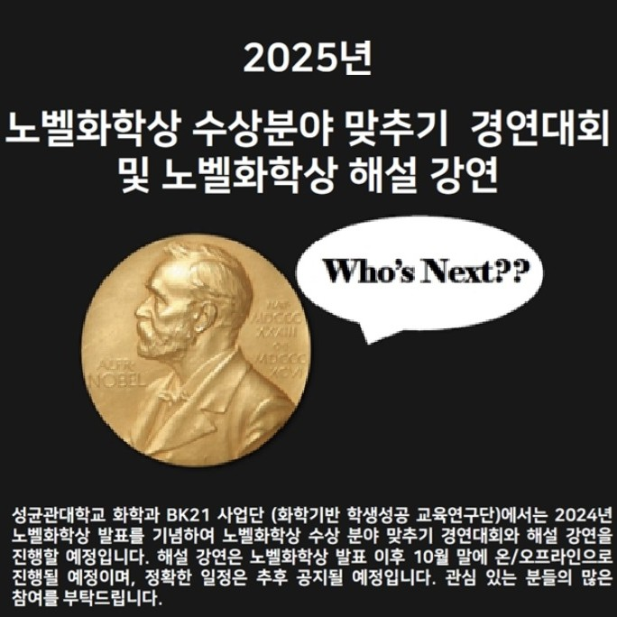

성균관대학교 알리미들이 함께 모여 참여한 해외 교류 프로그램으로, 우리 대학을 해외에 알리고 재외국민 학생들에게 입시 정보를 제공하는 것을 목표로 하였습니다.
일본의 도쿄대학교, 와세다대학교, 오사카대학교를 방문하여 현지 학생들과 교류하며 각 대학의 교육 환경과 문화를 직접 경험할 수 있었습니다.
또한 동경한국학교에서는 입시설명회와 멘토링을 진행하며, 후배 학생들의 고민을 듣고 구체적인 조언을 나누었습니다.
이 과정을 통해 단순한 학교 홍보를 넘어, 청중의 상황과 관심사에 맞추어 메시지를 재구성하는 소통 능력을 배울 수 있었습니다.
나아가 복잡한 정보를 쉽고 설득력 있게 전달하는 법과 글로벌 환경에서 협업하는 태도의 중요성을 깨닫게 되었습니다.
2024
화학과 선배님(류덕희 회장님)이 설립하신 경동제약의 양감공장과 발안공장을 방문하였습니다.
이곳에서 연구소와 생산 라인을 직접 둘러보며 R&D 실험실부터 제조 공정까지 이어지는 흐름을 확인할 수 있었습니다.
특히 연구실에서 설정하던 실험 조건이 공장에서는 설비 한계나 대규모 배치 변동성과 맞닿는다는 사실이 인상 깊었습니다.
또한 품질 관리 시험 절차, 문서 관리 체계, 배치 기록의 중요성을 배우며 연구 결과가 제품으로 이어지기까지의 품질 보증 체계를 직접 목격할 수 있었습니다.
이를 통해 연구자는 실험실 이론뿐 아니라 현장의 제약과 규제까지 고려해야 한다는 시야를 넓힐 수 있었습니다.
2025 · 진행 중
디지털 헬스케어 분야와 IoT 융합 역량을 배우고자 이 과정에 참가 중입니다.
저는 ‘시각장애인 색 인식 음성 알림’ 기기를 직접 설계하고 제작을 준비하고 있습니다.
아두이노를 이용해 센서 제어 및 데이터 처리 로직을 구성하고, 컬러 센서를 통해 색을 인식한 뒤 mp3 출력 모듈로 음성 알림까지 연결하는 과정을 경험할 예정입니다.
단순한 코드 작성이 아니라, 기기 하나가 실제로 사용자에게 작동할 수 있는 상태가 되도록 만드는 과정 자체가 의미 있다고 생각합니다.
2025 · 진행 중
학부 과정에서는 정량적 분석과 정성적 분석을 종합적으로 다루기 어려웠기에, 본 과정을 통해 혼합연구 방법론을 깊이 배우고자 지원하였습니다.
연구 질문에 따라 적합한 방법을 판단하고, 복합 개입 연구 설계와 리얼리스트 평가와 같은 고급 방법론을 학습할 수 있다는 점이 큰 동기였습니다.
이를 통해 향후 제약·신약개발 연구에서 환자 경험과 수치 데이터를 함께 반영하는 균형 잡힌 연구 설계를 수행할 수 있는 역량을 기르고자 합니다.
2025 · 참가 중
연구 윤리는 학문적 성과를 넘어 연구의 신뢰성과 직결된다고 생각합니다.
본 과정에서는 국제 표준인 GCP를 실험실 현장에서 실제 절차와 연결하여 적용하는 법을 배우게 됩니다.
시료 관리와 데이터 기록, 문서화 과정을 체계적으로 학습함으로써, 연구 재현성과 추적성을 보장하는 방법을 익히고자 합니다.
이를 통해 앞으로 책임감 있고 신뢰받는 연구자로 성장할 수 있는 토대를 마련하고자 합니다.
2025 · 참가 중
저는 스스로의 학업과 활동을 돌아보고 앞으로의 방향을 점검하기 위해 이 공모전에 참가하였습니다.
평소에는 한 과목, 한 활동 단위로만 성과를 바라보았지만, 포트폴리오를 구성하는 과정에서 여러 경험이 어떻게 이어지고 있는지를 새롭게 보게 되었습니다.
단순히 성과를 나열하는 것이 아니라, 선택의 이유와 그 과정에서 얻은 배움까지 정리하다 보니 제 강점과 부족한 점이 뚜렷하게 드러났습니다.
이를 통해 앞으로 어떤 역량을 더 키워야 할지 구체적으로 고민하게 되었고, 학업과 연구 과정을 더욱 성실히 기록하고 발전시켜 나가야 한다는 확신을 다지게 되었습니다.

2025 · 참가 중
저는 최신 과학의 흐름을 직접 따라가 보고 싶다는 생각으로 이 대회에 참가하였습니다.
평소에는 교과서에 정리된 개념 위주로 공부했지만, 노벨상은 지금 이 순간 전 세계 연구자들이 주목하는 성과를 조명한다는 점에서 특별했습니다.
후보로 거론되는 연구들을 조사하며 단순한 지식 습득을 넘어, 왜 이 연구가 중요한지, 산업과 사회에 어떤 가치를 가질 수 있는지를 고민하게 되었습니다.
비록 수상 결과는 아직 발표되지 않았지만, 다양한 연구 분야를 비교하며 학문이 발전하는 방향을 넓은 시각으로 바라보는 데 큰 도움이 되었습니다.
🌀 나의 스토리
저는 학부 시절부터 다양한 사람들과 함께하는 활동 속에서 성장해 왔습니다.
성균관대학교 공식 홍보대사 알리미와 울림·아하 임원단 활동을 맡으며, 단순한 홍보와 운영을 넘어 상황과 청중에 맞는 메시지를 전하는 소통력을 기를 수 있었습니다.
특히 알리미 활동을 통해 다양한 배경의 후배들과 마주하면서, 지식의 양보다 중요한 것은 공감과 설득이라는 사실을 깨달았습니다.
이 경험은 연구자가 복잡한 연구 내용을 누구나 이해할 수 있는 언어로 설명해야 한다는 점을 일찍 깨닫게 해주었습니다.
저는 활동뿐 아니라 학업에서도 꾸준히 최선을 다해, 현재까지 평점 4.27을 유지하고 있습니다.
1학년 때는 계열제로 다양한 기초 과목을 수강하며 학문의 폭을 넓혔고, 이후에는 본격적인 화학생명 분야 전공을 깊이 있게 배우기 위해 노력하고 있습니다.
또한 해외에서 진행된 실시간 강의에 참여하여 국제적 학문 기준에 맞는 연구 방법론을 익히고 제 학문적 시야를 확장하였습니다.
이러한 경험은 기초를 충실히 다지면서도 새로운 가능성을 모색하는 태도를 길러주었습니다.
저는 연구자의 길에 필요한 현장 경험을 쌓고자 교내 활동을 넘어 다양한 기회를 찾았습니다.
화학과 동문기업 탐방 프로그램을 통해 연구실 실험 조건이 산업 현장에서는 설비와 규제라는 새로운 제약과 맞닿는다는 사실을 체감했습니다.
또한 DNA School 아두이노 프로젝트에서는 시각장애인을 위한 색 인식 음성 기기를 직접 설계하며, 아이디어를 실행 가능한 결과물로 전환하는 능력을 배웠습니다.
이 과정을 통해 연구는 논문 속 이론에 머무르지 않고 사회적 필요에 맞게 작동할 때 비로소 가치를 가진다는 점을 확인할 수 있었습니다.
저는 학문적 시야를 넓히기 위해 SKKU-BA-DIVE 해외 교류 프로그램에 참여했습니다.
일본의 도쿄대학교·와세다대학교·오사카대학교를 방문해 현지 학생들과 교류하며 각 대학의 교육 환경과 문화를 직접 경험했습니다.
또한 동경한국학교에서는 입시설명회와 멘토링을 진행하여, 후배 학생들의 고민을 듣고 구체적인 조언을 나눴습니다.
이 과정을 통해 단순한 홍보 활동을 넘어, 다양한 문화적 맥락에서 소통하는 능력과 글로벌 환경에서 협업하는 태도를 배울 수 있었습니다.
이러한 경험은 저에게 연구 성과가 국제적 차원에서 공유되고 협력되어야 한다는 인식을 심어주었습니다.
학생성공 E-포트폴리오 공모전에 참가하며, 저는 처음으로 스스로의 활동을 하나의 이야기로 정리해 보았습니다.
이 과정에서 성과보다 중요한 것은 선택의 이유와 그로부터의 배움이라는 사실을 알게 되었습니다.
또한 장학금 수혜 경험을 단순한 지원이 아닌 책임감을 강화하는 계기로 받아들이며, 앞으로의 길에 더욱 진지하게 임해야 함을 깨달았습니다.
이러한 성찰은 연구자의 자세를 다잡는 중요한 계기가 되었습니다.
앞으로 저는 학부와 대학원에서의 배움을 토대로 제약·화학생명 분야 연구자로 성장하고자 합니다.
지금까지의 경험이 저에게 소통, 실행, 글로벌 협력, 성찰이라는 네 가지 역량을 남겼듯, 앞으로도 이를 기반으로 연구를 이어가겠습니다.
특히 작은 발견이 실제 삶의 변화를 만들어내는 연구를 꾸준히 실천하겠습니다.